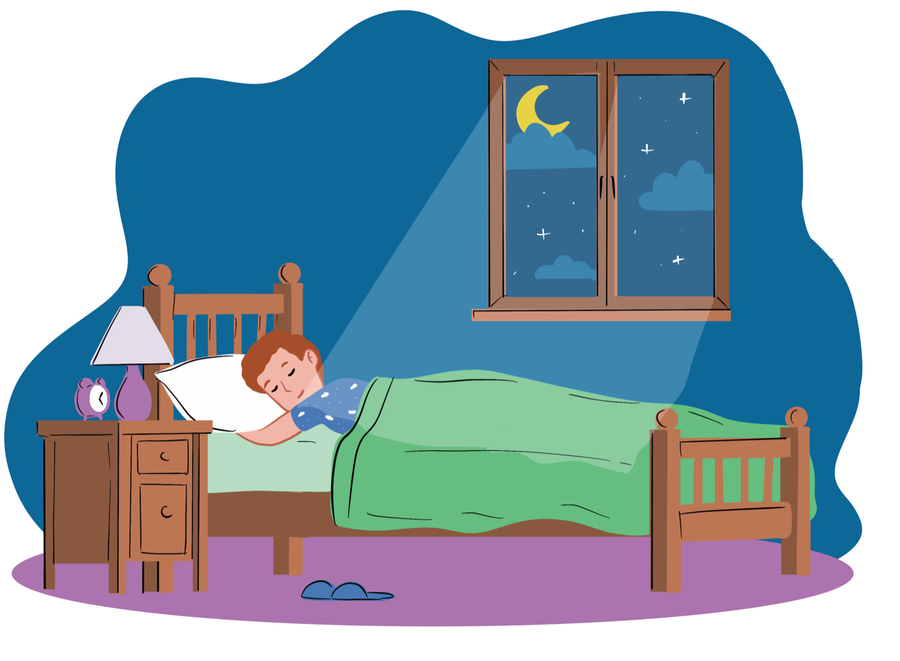

Resurset dhe trashëgimia e vendit tim
Kujdesi shëndetësor
Situata 1.
Mali, çdo mbrëmje, shkon në shtrat pasmesnate. Të nesërmen duhet të zgjohet në orën 07:00, për t’u përgatitur për shkollë.
Ai çdo mbrëmje i lë gati rrobat e shkollës, kështu që në mëngjes i vesh shpejt e shpejt, e shkon me vrap në shkollë.
Mali mëngjesin e ha në shkollë, në orën 9 e 30 minuta. Pas mësimit, kthehet në shtëpi i lodhur, ha drekën, lëshon perdet e dritareve që të bëhet errësirë dhe menjëherë shtrihet për të bërë gjumin e pasdites. Shokët e thërrasin për të luajtur futboll ose ndonjë lojë tjetër në ajër të pastër, por ai asnjëherë nuk u bashkohet atyre, sepse i duhet të flejë.
Pasi zgjohet, atij i pëlqen të hajë ushqime të shpejta dhe të pijë pije të gazuara. Nuk ha me orar dhe nuk pi mjaftueshëm ujë.
Të gjithë janë të brengosur pse Mali është shumë i zbehtë dhe nuk është i shëndetshëm. Prindërit kanë vendosur të ndërrojnë shprehitë e Malit, në mënyrë që ai të bëjë një jetë më të shëndetshme.
